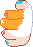
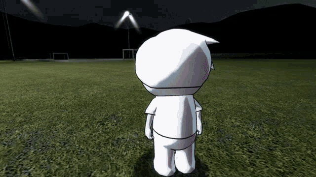
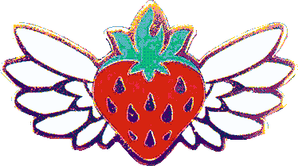
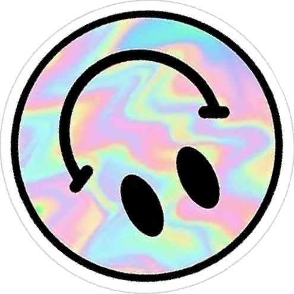
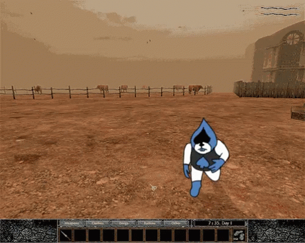
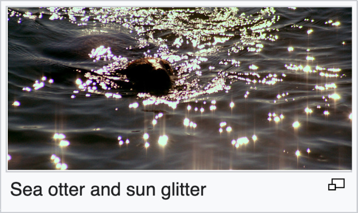
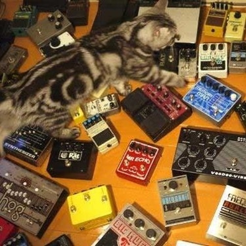
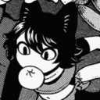

![A high-resolution pixelart drawing of the webmaster! She is skinny and has medium-length brown hair, fading to purple. She is wearing a black shirt, a large mustard-colored sweater (with trans-flag-colored horizontal stripes across the chest), faded jean shorts, and a pair of round glasses. She also has several cat-like features: she has white orange-spotted cat ears and a tail, as well as a cat's nose, pawpads, and long white whiskers. Her skin is also covered with large spots of orange and white, similar to a calico cat's fur. She is facing to the right, grinning enthusiastically with her eyes closed, and she has one hand raised above her head in a peace sign gesture.](assets/me.png)

heyo! :3

I'm June, the webmaster! (she/they)
I like to pretend I make things. Scientists are still undecided whether this is true.
Here are some things you can know about me:




I'm June, the webmaster! (she/they)
I like to pretend I make things. Scientists are still undecided whether this is true.
Here are some things you can know about me:






